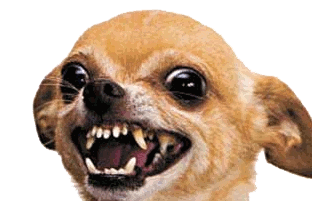

Animales
Apaguas
Apaguas es una asociación que se centra en el rescate de perros de aguas.Podemos afirmar por experiencias propias que esta asociación es de fíar, puesto que el perro de la imagen es el que Malena adoptó a esta misma.
Can Flix & Ampare
Esta asociación salva principalmente a gatos y perros de todas las razas y más adelante los pone en adopción como cualquier otra protectora.
Bigotis cat
Bigotis cat es una asociación principalmente centrada en gatos, aunque también salva perros. Esta asociación también tiene una clínica veterinaria bajo su custodia.

Protectora baix
Esta protectora no especifica en razas.La única desventaja es que se sitúa en el País Bajo, por lo que está mas inaccesible para la gente que vive en Madrid.